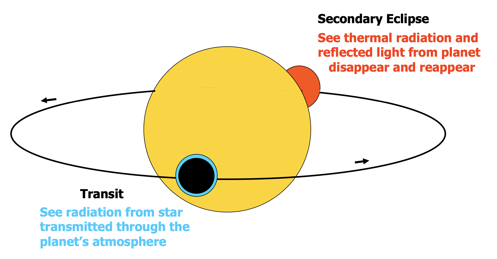
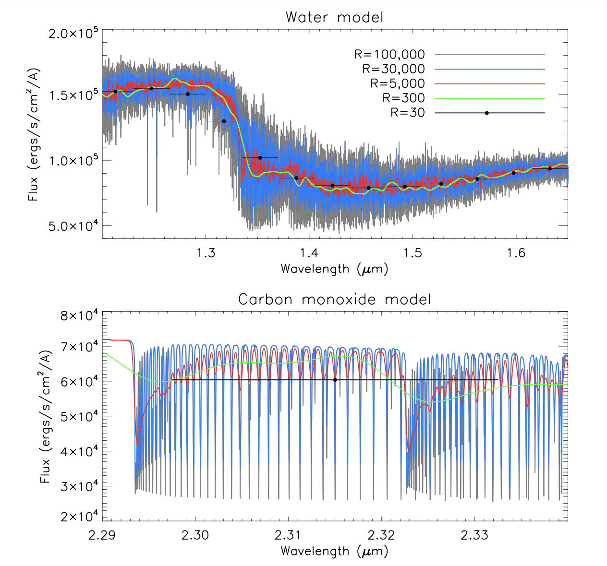

Terminologies
Explore key terminologies and words used in my PhD research to gain a deeper understanding of
the topics discussed in the "Research" section. This glossary will help you navigate complex concepts
and hopefully help enhance your comprehension of my work.
Take your pick!
- High-Resolution Emission Spectroscopy
- "Ultra-hot" Jupiters
- High equilibrium temperatures: UHJs receive intense stellar irradiation and as a result will have high equilibrium temperatures, which is expected to have a significant impact on their atmospheric structure and composition - such as the occurrence of inversion layers due to the presence of specific molecular compounds high up in the atmospheres.
- Unique chemical processes: hot Jupiters around early type stars receive more UV radiation than similar planets around late type stars. This UV radiation may drive unique chemical processes in the atmospheres of these planets.
- Clues to formation: comparing their orbital properties with those of hot Jupiters orbiting solar-type stars may shed light on their formation.
- Cross-correlation technique
We can use spectroscopy to characterise the atmospheres of exoplanets. By analysing the spectra produced, we can identify the elements present and gain insights into the planet's bulk composition, atmospheric composition, temperature, and abundance (similar to eagerly checking the grocery bag when your mother returns home, hoping to find your favourite snack). We can analyse a planet’s atmosphere using transmission and emission spectroscopy as well as phase curves. An emission spectrum is obtained during a secondary eclipse, that is, the moment in time when the planet disappears behind it's host-star, and emission spectroscopy effectively enables a direct spectrum of the planet, which allows measurements of the temperature structure and chemical composition, thereby allowing the detection of molecules and atoms in the planetary atmosphere using the cross-correlation technique. In addition, resolved phase-curve observations enable us to obtain spectra as the planet rotates, allowing us to effectively spatially-resolve the surface.  Atmospheric characterisation is possible in both low- and high-resolution. At low-resolution, we are sensitive to broad spectral features like molecular bands and continuum opacity sources such as clouds, hazes, etc., which can often lead to a lot of ambiguity in low-res detections (see Fig. 2 - green curve is quite broad). Whereas at high-resolution, individual atomic/molecular spectral lines can be resolved (black/blue curves), thereby allowing retention of information and resulting in unambiguous detections of species in the atmospheres of these alien worlds.  Figure 2. The effect of decreasing spectral resolution. The two panels show different wavelength regions of a model hot Jupiter atmosphere containing water and carbon monoxide (Figure from Birkby et al. 2018)
Ultra-hot Jupiters (UHJs) are a class of gas giant exoplanets (slightly larger than Jupiter) that have very short orbital periods (P < 10 days), which means they orbit their host-stars at distances closer than Mercury orbits our Sun! Such proximity makes them tidally locked (i.e. one side always faces the star), resulting in sorching high temperatures (Teq ≳ 2, 200 K). Studying the hot Jupiter population around hot stars is interesting for several reasons:
work in progress!